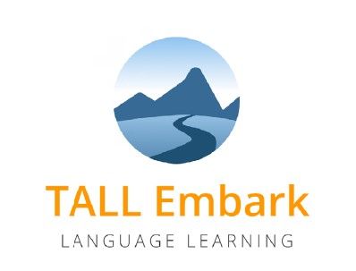
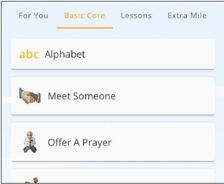
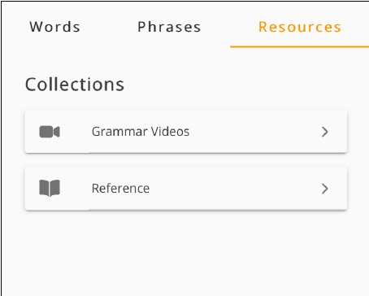

To prepare for EnglishConnect 1
Welcome to Learn English! Our website is designed to help individuals learn English in an easy and fun way. We offer a variety of lessons and practice exercises to help you improve your English skills.
Step One: Get the TALL Embark Mobile App
- 👉🏼 Go to: https://tall.global/embark or click this LINK
- 👉🏼 Sign in using your Church Account.
- 👉🏼 For “I Want to Learn”, choose English.
- 👉🏼 For “Native Language”, choose your native language.

Step Two: Familiarize yourself with these sections of Embark
Learn
- Basic Core
- Daily Life
- Review
- Manage
- Quiz me
Explore
- Resources
- Gramma Vdeos
To get to the Grammar Videos: Choose “Explore” ➡ “Resources” ➡ “Grammar Videos” or click HERE

Tips for success
- 👉🏼 Make your own flashcards or keep a list of new vocabulary and key phrases in a study notebook.
- 👉🏼 Take notes while you watch the videos. Speak aloud with the videos. Watch 2 or 3 times.
👉🏼 Practice the vocabulary and phrases with a partner as often as possible. HERE
Step Three: Study these lessons
Watch the Grammar Videos, learn the Vocabulary, and practice the Phrases